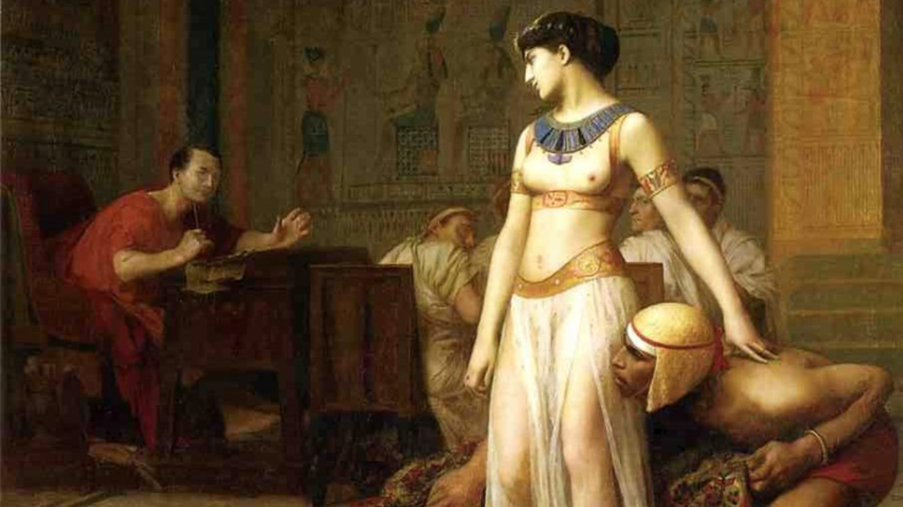

Cleopatra VII no fue solo una reina egipcia: fue una fuerza imparable en la historia del mundo antiguo. Inteligente, audaz y decidida, supo conquistar algo más que territorios: conquistó corazones, mentes y el respeto de algunos de los hombres más poderosos de su tiempo. Fue la última faraona de Egipto, pero también la única en dejar una huella tan profunda que, más de dos mil años después, su nombre sigue vivo.
Hablaba varios idiomas, dominaba la ciencia, la política y la estrategia, y entendía el poder de la imagen mucho antes de que existiera el concepto de propaganda. Cleopatra no necesitó magia para seducir a Julio César o Marco Antonio; su mayor encanto fue su inteligencia...
Su historia combina romance, intriga y tragedia en una de las épocas más fascinantes de la historia: el ocaso de Egipto como potencia independiente y el ascenso imparable de Roma. Cleopatra no fue una víctima del destino, sino una mujer que eligió su camino, incluso cuando ese camino la condujo al borde del abismo.
Explora su legado, descubre los mitos y verdades detrás de la leyenda, y adéntrate en la vida de una mujer que desafió las normas, rompió esquemas y cambió la historia para siempre.
Tras la derrota frente a Octavio (futuro emperador Augusto), Cleopatra tomó la decisión más dramática de su vida: quitarse la vida antes de ser exhibida como trofeo de guerra. Así, murió como vivió: con dignidad, orgullo y determinación.